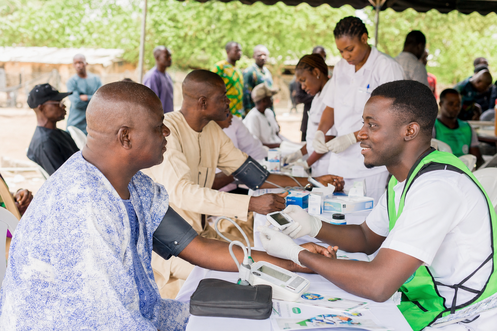
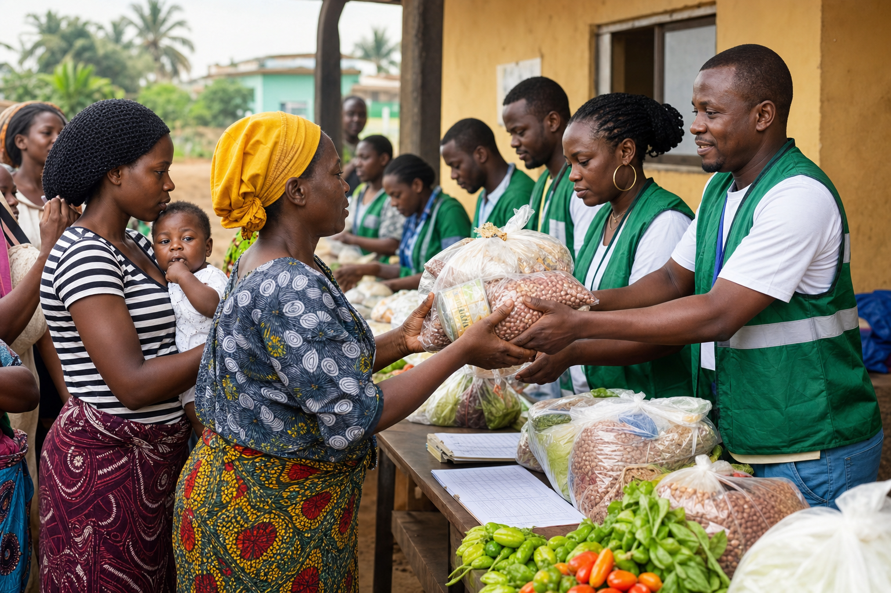
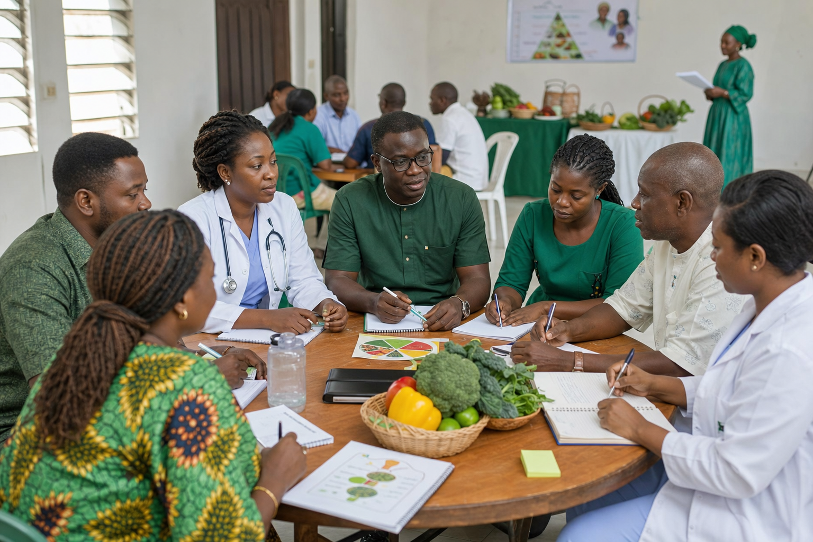

Edo State grassroots NGO
Empowering Lives, Nourishing Communities
We combine men's health awareness, preventive screenings, food support, and community wellness education for vulnerable households around Benin City and Edo State.
Why this NGO matters
Health and food security are connected.
Poor nutrition can worsen chronic health conditions, while poor health limits a person's ability to work, provide, and feed a family. This foundation targets that neglected intersection with practical local outreach.
Men's health awareness
Screenings, mental health conversations, and early care-seeking support help reduce stigma.
Food assistance
Distribution and nutrition education give low-income households immediate and practical help.
Grassroots reach
Local teams can respond quickly to community needs across Edo State.
Programs
Focused initiatives for stronger communities.

Preventive Health Screening
Blood pressure, glucose checks, health talks, and referral guidance.

Emergency Food Assistance
Food packs, community food drives, and nutrition-sensitive relief.

Community Wellness Workshops
Training for volunteers, families, and local community leaders.
Latest activities
View All